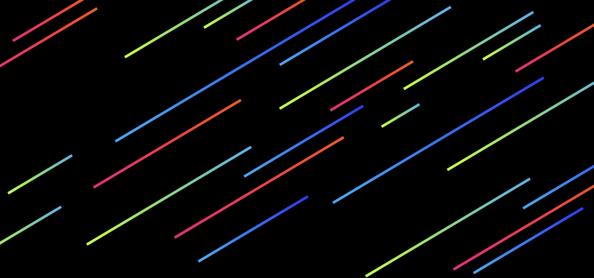

The Futuristic Research Cluster of Thailand and Beyond!
FREAK Lab is an anti-disciplinary research cluster that converges arts, science, and technology for thinking beyond and exploring the symbiotic relationship between human and emerging technologies.
Founded by a group of JSTP alumni and mentors in 2017 inside King Mongkut's University of Technology Thonburi (KMUTT), FREAK Lab uses a variety of methods and mediums: prototypes, research, arts, and installations.
The community of FREAKs are open-minded peoples from multi-disciplines, ages, and expertise that work together on cutting edge projects without bureaucracy and hierarchy.
FREAK Lab is a platform for transforming inspirational futuristic ideas into practical prototypes that have high impact to society in terms of aesthetics, knowledges, and economy.

Food fabrication, 3D food printing, and the future of gastronomy
Bio-digital interfaces, wearable biotech, and living systems
Where function meets beauty in design and technology
Neuroscience, EEG, and brain-computer interfaces
Future education, STEM, and creative learning
Space exploration, rocketry, and microgravity research
Social experiments, alternative currencies, and future societies
Environmental Sensor via Bio-Digital Interfaces
Neurotechnology in the Merger of Biological and Machine Intelligence
Molecular Encoded Storage for Space Exploration
Lunar pearls from synchrotron light — art and science fusion
The Next Generation of Wearable Devices
Reinventing A New Currency
We welcome scientists, artists, innovators, business developers, humanists, and visionaries to join our FREAK community!
เรายินดีต้อนรับนักเรียน นักศึกษา นักวิจัย นักลงทุน และผู้สนใจทำสิ่งเจ๋งๆ!
Join Us →